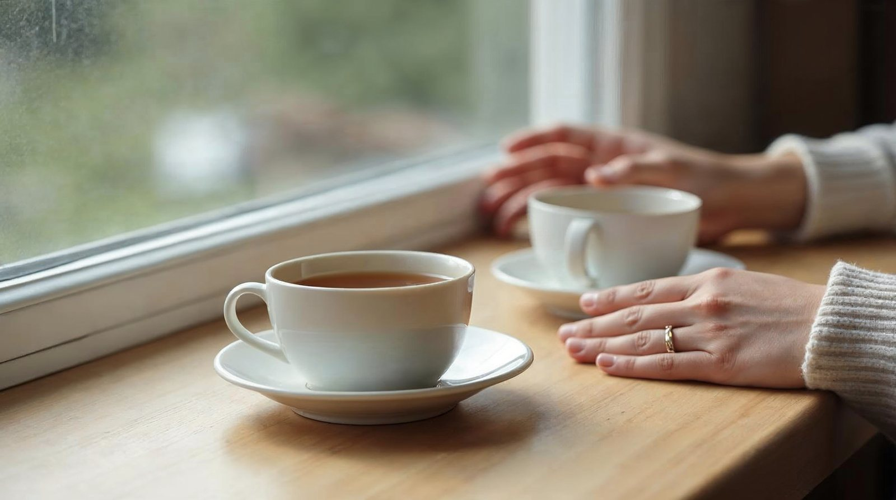

이종호 한의사 감수좋은꿈참사랑한의원 대표원장 (한의사 면허번호 19769)발행 2026-11-22 · 수정 2026-11-25
이 글의 차례
"요즘 계속 못 잤어요." 진료실 의자에 앉자마자 이렇게 말씀하시는 분이 많습니다. 저는 그 말이 얼마나 지친 마음에서 나오는지 압니다. 그런데 "언제부터요? 잠이 안 드세요, 자다가 깨세요?" 하고 여쭤보면 잠시 말이 멈춥니다. 매일 밤이 힘들었던 것 같은데, 막상 어떤 밤이었는지 떠올리려니 다 비슷하게 흐릿하기 때문입니다.
수면 일기는 바로 이 흐릿한 한 주를 몇 줄로 붙잡아 두는 방법입니다. 어렵지 않습니다. 정확하지 않아도 괜찮고, 일주일만 적어도 충분합니다.
기억은 힘든 밤을 더 크게 남깁니다
사람의 기억은 공평하지 않습니다. 새벽 세 시에 눈이 떠져 천장만 바라보던 밤은 또렷하게 남고, 그럭저럭 자고 일어난 아침은 금세 잊힙니다. 그래서 일주일을 돌아보면 매일 못 잔 것처럼 느껴집니다. 그 느낌이 틀렸다는 말이 아닙니다. 그만큼 힘든 밤이 마음을 무겁게 눌렀다는 뜻이니까요.
다만 진료실에서 함께 길을 찾으려면 그 무게 아래에 숨은 모양을 봐야 합니다. 일기를 펼쳐 보면 "화요일과 금요일은 그나마 잤네요" 하는 날이 꼭 한두 번 나옵니다. 그 두 날이 다른 날과 무엇이 달랐는지 찾다 보면 실마리가 보이기 시작합니다. 저녁을 일찍 먹은 날이었는지, 오후에 커피를 건너뛴 날이었는지, 낮에 많이 걸은 날이었는지요.
그 차이는 환자분 스스로 찾아내시는 경우가 많고, 저는 그 순간을 참 좋아합니다. 몇 주째 답답하던 얼굴이 "아, 그날은 제가 저녁을 일찍 먹었네요" 하며 조금 밝아지는 순간이 있습니다. 내 잠이 아무 이유 없이 무너지는 게 아니라 무언가와 이어져 있다는 걸 알게 되면, 막막함이 조금은 줄어듭니다.
왜 수면 일기를 쓰면 좋을까요
잠의 불편은 모양이 여러 가지라, 무엇이 흔들리는지부터 나눠 봐야 합니다. 잠들기까지 오래 걸리는 분은 저녁의 긴장이나 늦은 화면, 카페인이 겹친 경우가 많습니다. 중간에 자주 깨는 분은 밤 소변, 통증, 더위나 추위, 코골이를 함께 살펴야 합니다. 새벽에 너무 일찍 깨는 분은 수면 후반의 얕아진 잠, 저녁 술, 마음속 걱정이 관련될 수 있습니다.
시간은 충분히 잤는데 개운하지 않은 분은 잠의 깊이와 낮 생활을 함께 봐야 합니다.
같은 "잠을 못 잔다"는 말이라도 이 넷은 살펴볼 곳이 다릅니다. 일기는 이 가운데 어느 쪽인지 가려내는 가장 쉬운 방법이고, 나중에 무언가를 바꿔 본 뒤 달라졌는지 비교하는 잣대가 되어 줍니다.
무엇을 적으면 될까요
처음부터 많이 적으려 하면 사흘을 못 갑니다. 저는 아래 다섯 가지만 권해 드립니다.
- 누운 시각과 잠들었다고 느낀 시각
- 밤에 깬 횟수와 대략의 시각, 깬 이유(소변, 통증, 꿈, 걱정 등)
- 일어난 시각과 아침의 개운함(좋음·보통·안 좋음)
- 낮의 졸음과 낮잠(몇 시에 얼마나)
- 카페인과 술, 저녁 식사 시각, 먹은 약(수면제 포함)
한 줄은 이런 식이면 됩니다. "누움 23:30 / 잠듦 00:30쯤 / 깸 1번(4시, 소변) / 기상 6:40 / 개운함 보통 / 커피 2잔(마지막 오후 3시) / 저녁 8시". 이 정도만 있어도 진료실에서 나눌 이야기가 훨씬 풍성해집니다.
항목마다 이유가 있습니다. 누운 시각과 잠든 시각의 차이를 보면 잠들기 어려운 쪽인지 알 수 있고, 깬 시각과 이유를 보면 밤중에 무엇이 잠을 깨우는지 짐작할 수 있습니다. 일어난 시각은 하루 리듬의 닻 같은 것이라, 이 시각이 날마다 크게 흔들리는지가 중요합니다.
아침의 개운함은 잠의 길이만으로는 알 수 없는 잠의 깊이를 보여 주고, 카페인과 술, 저녁 식사 시각은 그날 밤 잠에 영향을 줄 수 있는 것들을 한눈에 보여 줍니다. 그러니 다섯 가지 가운데 하나를 빼야 한다면 차라리 깬 이유를 빼시고, 일어난 시각과 아침의 개운함만큼은 남겨 주세요.
하루 중 언제, 어떻게 쓰면 편할까요
가장 좋은 때는 아침에 일어나 세수하기 전입니다. 머리맡에 둔 종이나 휴대폰 메모에 지난밤을 한 줄로 적고, 저녁 식사 시각과 커피는 그날 밤 잠자리에 들기 전에 한 줄 덧붙이면 됩니다. 하루에 두 번, 합쳐서 일 분이면 충분합니다.
여기서 한 가지 꼭 당부드리고 싶은 것이 있습니다. 정확히 적으려고 밤중에 시계를 보지는 마세요. 새벽에 눈을 떴을 때 시계를 확인하는 순간 "벌써 세 시네, 이제 세 시간밖에 못 자겠다"는 계산이 시작되고, 그 계산이 잠을 더 멀리 쫓아냅니다. 아침에 "새벽 서너 시쯤 한 번 깼다"라고 대략 적으면 그걸로 충분합니다.
잠이 유난히 좋았거나 나빴던 날은 그날 있었던 일을 한 줄 더 적어 두세요. "오후에 언짢은 통화", "저녁 늦게 회식", "낮에 한 시간 걸음" 같은 메모가 나중에 큰 단서가 됩니다.
어르신이라면 큰 글씨로 칸을 미리 그어 둔 종이를 냉장고나 침대 옆에 붙여 두시는 것도 방법입니다. 자녀분이 대신 칸을 그려 드리고 저녁에 전화로 "오늘 몇 시에 주무실 거예요?" 하고 한 번 물어봐 주시면, 그 통화 자체가 하루를 정리하는 작은 습관이 되기도 합니다. 종이든 휴대폰 메모든 앱이든 편한 방법이면 무엇이든 괜찮습니다.
스마트워치 기록을 쓰신다면 그 숫자 옆에 아침에 내가 느낀 개운함을 꼭 함께 적어 주세요. 기기의 추정치에는 한계가 있고, 결국 중요한 것은 그 잠을 지나온 내 몸의 느낌이기 때문입니다.
잠 말고도 한 칸 더 적어 두면 좋은 것
여유가 있으시다면 잠 옆에 몸의 이야기를 한 칸만 더 적어 보세요. 저녁을 먹고 속이 더부룩했는지, 그날 대변은 어땠는지, 잠자리에 누웠을 때 손발이 찼는지 혹은 몸이 달아올라 이불을 걷어찼는지 같은 것들입니다. "속 더부룩", "발 참", "변비 사흘째"처럼 짧은 말이면 됩니다.
이걸 여쭙는 데에는 이유가 있습니다. 저는 잠을 따로 떨어진 문제로 보지 않습니다. 저녁이 무겁게 얹힌 날은 잠이 얕아지기 쉽고, 몸이 차서 한참 뒤척이다 잠드는 분도 있고, 반대로 열이 올라 새벽에 깨는 분도 있습니다. 며칠을 모아 보면 "속이 불편한 날에 꼭 새벽에 깼네요" 같은 연결이 드러나기도 합니다.
그 연결은 진맥을 하며 몸을 살필 때 저에게도 중요한 길잡이가 됩니다.
마음의 날씨도 한 단어쯤 적어 두시면 좋습니다. "답답", "편안", "걱정 많음" 정도면 충분합니다. 걱정이 많았던 날과 잠들기 어려웠던 날이 얼마나 겹치는지 보이는 것만으로도, 무엇부터 돌보면 좋을지 함께 정하기가 한결 쉬워집니다.

가족이 함께 봐 주면 좋은 것
혼자서는 알 수 없는 밤의 모습도 있습니다. 코를 얼마나 고는지, 자다가 숨을 멈추는 듯한지, 잠꼬대를 하거나 다리를 자꾸 움직이는지는 곁에 있는 사람이 더 잘 압니다. 함께 주무시는 가족이 있다면 일주일 동안 눈에 띈 것을 일기 한쪽에 적어 달라고 부탁해 보세요.
"새벽에 한참 뒤척임", "코골이 크게, 중간에 조용해짐" 같은 한 줄이 진료실에서 큰 도움이 됩니다.
특히 코골이 중에 숨이 멎는 듯한 모습이 적혀 있다면, 그건 일기를 계속 쓰기보다 수면 검사를 먼저 받아 보시라는 신호로 받아들여 주세요.
일기가 오히려 부담이 될 때
성실한 분일수록 일기를 쓰면서 잠을 더 신경 쓰게 되는 경우가 있습니다. 밤마다 오늘은 몇 시에 잠들지 걱정하고, 아침마다 기록을 보며 실망하는 식이지요. 그 마음이 들면 하루 이틀 쉬어 가셔도 됩니다. 일기는 숙제가 아니고, 빈칸이 있다고 해서 진료가 어려워지지도 않습니다.
빠진 날은 빈칸으로 두시면 됩니다. 나중에 기억을 더듬어 채우는 것보다 비워 두는 편이 오히려 정직한 기록입니다. 일기를 쓴다고 해서 곧바로 잠이 달라져야 하는 것도 아닙니다. 일기는 잠의 모양을 보기 위한 기록이지 그 자체로 치료는 아니라는 점을 편하게 받아들여 주셨으면 합니다.
교대 근무나 생활이 불규칙하다면
밤 근무와 낮 근무가 번갈아 오는 분, 자영업으로 가게 문 닫는 시각이 매일 다른 분은 일기를 보면 칸마다 시각이 제각각이라 처음엔 막막해하십니다. 이런 분께는 날짜 옆에 그날 근무가 낮이었는지 밤이었는지, 쉬는 날이었는지를 먼저 표시해 보시라고 권합니다.
같은 밤 근무 뒤라도 퇴근길에 햇빛을 많이 본 날과 선글라스를 쓰고 바로 들어간 날, 퇴근하고 바로 잔 날과 식사를 하고 잔 날이 어떻게 달랐는지 비교할 수 있게 됩니다.
시각이 들쭉날쭉하다고 일기가 쓸모없어지는 것이 아닙니다. 오히려 그런 생활일수록 기록이 있어야 내 몸이 어떤 순서를 덜 힘들어하는지 찾을 수 있습니다. 완벽한 규칙을 세우기보다 그 안에서 지킬 수 있는 한두 가지 기준점을 함께 찾아보는 것이 목표입니다.
진료실에서 자주 만나는 일기의 모양들
특정한 누구의 일기가 아니라, 여러 일기를 보며 자주 마주친 흐름을 정리해 보면 이렇습니다.
야근이 잦은 직장인의 일기에는 퇴근 시각과 저녁 식사 시각이 들쑥날쑥합니다. 이런 분께는 퇴근 시각을 한 칸 더 적어 보시라고 권합니다. 그러면 밤 아홉 시가 넘어 저녁을 먹은 날 잠드는 시각이 어떻게 밀리는지 눈으로 보이기 시작합니다.
새벽에 일찍 깨는 어르신의 일기를 보면 저녁 여덟 시만 되어도 눕는 날이 많고, 오후에 소파에서 한 시간 넘게 조는 날도 있습니다. 낮잠 시각과 길이, 저녁에 누운 시각을 함께 적어 두면 밤잠이 짧아지는 흐름을 같이 살펴볼 수 있습니다.
아이 때문에 밤에 여러 번 깨는 육아 중인 분의 일기는 처음엔 깬 횟수만 가득합니다. 아이 때문에 깬 것과 혼자 깬 것을 다른 표시로 구분해 보시라고 말씀드리면, 그제야 내 잠의 모양이 따로 보입니다. 아이가 잘 잔 밤에도 혼자 깨는지, 아니면 아이만 잘 자면 나도 그럭저럭 자는지에 따라 함께 살펴볼 곳이 달라집니다.
일주일을 다 쓰셨다면 이렇게 돌아보세요
일주일을 채운 날 저녁, 기록을 한번 쭉 훑어보세요. 잠들기까지 삼십 분 넘게 걸린 날이 며칠이었는지, 깬 뒤 다시 잠들기까지 오래 걸린 날이 있었는지, 주중과 주말의 일어난 시각이 두 시간 넘게 차이 났는지 봅니다. 오후 늦게 커피를 마신 날, 술을 마신 날, 낮잠을 길게 잔 날 밤이 다른 날과 어떻게 달랐는지도 살펴보세요.
잠은 길었는데 아침이 무거운 날이 많았다면 그것도 중요한 단서입니다.
그리고 스스로에게 세 가지만 물어보세요. 이번 주에 가장 편했던 밤은 언제였고 그날 무엇이 달랐는지, 가장 힘들었던 밤 앞에는 어떤 하루가 있었는지, 일주일 중 내가 그나마 지킬 수 있었던 습관은 무엇이었는지요. 대답이 잘 떠오르지 않아도 괜찮습니다. 질문을 품고 기록을 보는 것만으로도 내 잠을 바라보는 눈이 조금 달라집니다.
눈에 띄는 것이 있으면 연필로 동그라미만 쳐서 가져오셔도 충분합니다. 해석은 진료실에서 함께하면 됩니다.
한 가지만 바꾸고 다시 적어 보세요
일기를 쓰다 보면 고치고 싶은 것이 한꺼번에 보입니다. 커피도 줄이고, 휴대폰도 멀리하고, 일찍 눕고, 운동도 하고 싶어지지요. 그런데 한꺼번에 바꾸면 무엇이 도움이 됐는지 알 수 없고, 무엇보다 지칩니다. 저는 한 번에 한 가지만 바꾸고 다시 일이 주를 적어 보시길 권합니다.
예를 들어 다음 주에는 마지막 커피를 오후 두 시 전으로 당겨 보는 것 하나만 정합니다. 일어나는 시각은 주말에도 평일과 한 시간 안쪽으로 맞춰 봅니다. 그렇게 적은 두 번째 일기를 첫 번째 일기 옆에 나란히 놓으면, 내 몸에 맞는 변화가 무엇인지 조금씩 드러납니다.
처음 오시면 이렇게 진료합니다
일기를 가져오시면 먼저 함께 펼쳐 놓고 이야기를 듣습니다. 가장 힘들었던 밤과 비교적 편했던 밤이 무엇이 달랐는지, 깬 날에는 무엇 때문에 깼는지, 낮의 졸음이 심했던 날은 언제였는지 여쭙습니다. 일기가 없으셔도 괜찮습니다. 말씀으로 들려주시면 그대로 듣습니다.
그다음 양손 손목을 차례로 짚어 진맥을 합니다. 맥을 짚는 동안 식사는 어떤지, 속은 편한지, 대변은 어떤지, 손발이 찬 편인지, 잠자리에 누웠을 때 몸이 더운지 찬지를 이어서 여쭙습니다. 필요하다고 판단되면 혀와 배를 살피고 원내 장비로 몸 상태를 함께 보기도 합니다.
일기의 흐름과 진찰한 내용을 나란히 놓고, 지금 잠을 흔드는 쪽이 생활 리듬인지, 몸의 신호인지, 마음의 긴장인지 설명드린 뒤 침이나 한약 상담 등 치료 방향과 다음 주에 바꿔 볼 한 가지를 함께 정합니다.
다음에 오시면 같은 형식의 일기로 그 사이 무엇이 달라졌는지부터 이어서 봅니다. 저는 두 번째 일기를 펼칠 때가 늘 조금 설렙니다. 그 안에는 환자분이 일주일 동안 자기 몸을 지켜본 시간이 고스란히 담겨 있기 때문입니다.
얼마나 적고, 언제 상담하면 좋을까요
처음에는 일주일, 생활을 하나 바꿔 본 뒤에는 다시 일이 주를 적어 비교해 보세요. 일기에서 잠들기 어렵거나 자주 깨는 밤이 일주일에 세 번 이상이고 이런 흐름이 서너 주 넘게 이어진다면 진료를 받아 보시길 권합니다. 숨이 멎는 것 같다는 말을 들었거나 운전 중에도 졸음을 참기 어렵다면, 일기를 더 쓰기보다 먼저 수면클리닉이 있는 병원에서 진료를 받으세요.
이런 증상은 먼저 확인이 필요합니다
일기에 코골이와 숨 멎음, 낮의 심한 졸음이 반복해서 보이는 경우, 몇 주째 거의 자지 못해 일상이 어려운 경우, 우울감이 깊거나 극단적인 생각이 드는 경우(☎ 109)에는 먼저 해당 진료를 받으시길 권합니다. 수면제를 먹고 있다면 처방한 의사와 상의 없이 줄이거나 끊지 않습니다.
잠 못 드는 밤이 이어지면 내 몸이 나를 배신한 것 같은 기분이 들기도 합니다. 일기는 그 몸과 다시 이야기를 시작하는 작은 방법입니다. 서툴러도, 빈칸이 많아도 괜찮으니 편하게 시작해 보세요. 오늘 밤 머리맡에 종이 한 장과 연필 하나를 놓아 두는 것, 그것이면 시작으로 충분합니다. 다음에 진료실에서 그 종이를 함께 펼쳐 볼 날을 기다리겠습니다.
함께 읽으면 좋은 글
- "잠이 안 와요"라는 말을 세 가지로 나눠 설명하는 법은 무엇인가요?
- 밤에 자꾸 시계를 보게 될 때는 어떻게 하나요?
- 가족이 녹음한 코골이 소리를 진료에 가져가면 무엇을 보나요?

먼저 확인이 필요한 신호
- 일기에 코골이와 숨 멎음, 낮의 심한 졸음이 반복해서 보이는 경우, 몇 주째 거의…
- 수면제를 먹고 있다면 처방한 의사와 상의 없이 줄이거나 끊지 않습니다.
- 잠 못 드는 밤이 이어지면 내 몸이 나를 배신한 것 같은 기분이 들기도 합니다.
기억은 힘든 밤을 더 크게 남깁니다
- 사람의 기억은 공평하지 않습니다.
- 새벽 세 시에 눈이 떠져 천장만 바라보던 밤은 또렷하게 남고, 그럭저럭 자고 일어난…
왜 수면 일기를 쓰면 좋을까요
- 잠의 불편은 모양이 여러 가지라, 무엇이 흔들리는지부터 나눠 봐야 합니다.
- 잠들기까지 오래 걸리는 분은 저녁의 긴장이나 늦은 화면, 카페인이 겹친 경우가 많습…
무엇을 적으면 될까요
- 누운 시각과 잠들었다고 느낀 시각
- 밤에 깬 횟수와 대략의 시각, 깬 이유(소변, 통증, 꿈, 걱정 등)
자주 묻는 질문
일기를 꼭 써야 하나요?
아니요. 말씀으로만 하셔도 됩니다. 일기는 이야기를 정리하고 변화를 비교하는 데 도움이 됩니다.
앱이나 스마트워치 기록을 가져가도 되나요?
네, 편한 방법이면 됩니다. 다만 기기 숫자보다 아침에 느낀 개운함을 함께 적어 오시면 더 도움이 됩니다.
기록이 부담스러워요.
일주일만, 하루 한 줄씩만 적어도 충분합니다. 부담이 되면 쉬어 가셔도 괜찮습니다.
며칠 빠뜨렸는데 다시 처음부터 써야 하나요?
아니요. 빠진 날은 빈칸으로 두고 이어서 쓰시면 됩니다. 나중에 기억으로 채우기보다 비워 두셔도 괜찮습니다.
일기에 무엇을 바꿔 봤는지도 적어야 하나요?
네, 적어 두시면 좋습니다. 커피 시각을 당긴 날처럼 바꾼 것을 한 줄 메모해 두면 전후를 비교하기 쉽습니다.
좋은꿈참사랑한의원은 재진 때 지난번 이야기부터 이어서 여쭙니다. 진료시간과 예약은 오시는 길에서 확인하세요.
어디서 상담받을 수 있나요?
좋은꿈참사랑한의원은 서울 동작구 만양로2길 2 신성빌딩 3층·5층(서울 동작구 상도동, 7호선 상도역 3번 출구 근처)에 있습니다. 한의사 3명(이종호 대표원장, 조영기 수석진료원장, 정원영 진료원장)이 진료합니다. 진료시간은 평일 09:30~20:00(점심 13:00~14:00), 토·일·공휴일 09:30~15:00이며, 방문 전 전화로 확인을 권합니다. 예약은 네이버 예약, 카카오톡 상담, 전화 02-815-7510로 받습니다.
이 글은 일반적인 건강 정보이며 개인의 진단이나 치료를 대신하지 않습니다. 증상이 있거나 복용 중인 약이 있다면 진료를 통해 확인하세요. 치료 효과는 개인마다 다를 수 있습니다.
작성 기준: 일반적으로 알려져 있는 건강 정보를 참고해 정리했습니다(대표원장 감수). 증상 기록은 1~2주 동안 하루 1회, 비슷한 시간에 적어 오시면 지난 상태와 비교하기 쉽습니다.